3．渐近级数的正式理论
在函数表示和计算中有用的那些发散级数，对它们本性的完整认识，以及这些级数的正式定义，是1886年由庞加莱和斯蒂尔切斯独立地完成的。庞加莱称这些级数为渐近级数，而斯蒂尔切斯则继续使用半收敛级数这个名称。庞加莱(21)研究这个课题是为了进一步研究线性微分方程的解。受发散级数在天文学上的用途所感动，他力图找出什么东西是有用的以及为什么会有用。在去伪存真与确切陈述本质方面他获得了成功。形如
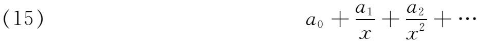
的级数，其中
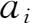
与x无关，我们说它对于大的x值渐近地表示函数f（x），是指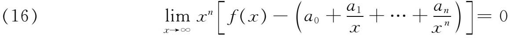
对n＝0，1，2，3，…成立。这级数一般是发散的，但在特殊情形可以是收敛的。这级数与f（x）的关系表示为
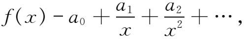
这样的级数是函数在x＝∞的邻域内的展开式。庞加莱在他1886年的文章中考虑了实的x值。然而，该定义对复的x也成立，只要用｜x｜→∞代替x→∞就行了；虽然表示的正确性就要被限制在复平面上的一个以原点为顶点的扇形内。
级数（15）是在x＝∞的邻域内渐近于f（x）。然而这定义已经被推广了：人们说级数
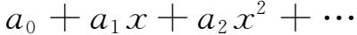
在x＝0渐近于f（x），如果
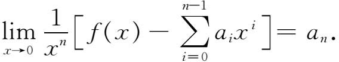
虽然在某些渐近级数的情形，人们知道中止于某一项将会出现什么样的误差；但对于一般的渐近级数，人们还不知道关于数值误差的这种信息。然而，渐近级数对于大的x可以用来给出相当精确的数值结果，只要取那样一些项，当所取的项愈来愈多时，这些项的数值大小是递减的。到任何一步，误差大小的数量级等于丢掉的第一项大小的数量级。
庞加莱证明，两个函数的和、差、积、商，可用它们各自的渐近级数的和、差、积、商渐近地表示，只要作为除数的级数的常数项不为0。还有，如果
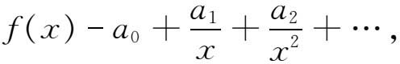
那么
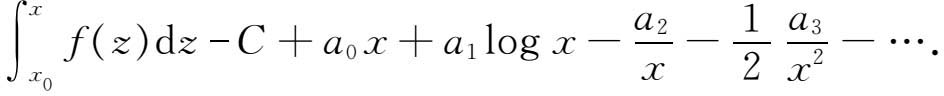
积分的运用包含着原来定义的一个微小的推广，这就是
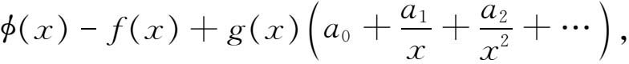
只要
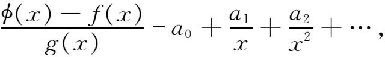
即使当f（x）与g（x）本身没有渐近级数表示时也成立。至于微分，如果已知f′（x）有渐近级数表示，那么它可以从f（x）的渐近级数经逐项微分得到。
若一已知函数有一个渐近级数表示，则它是唯一的；但反过来不成立，因为例如
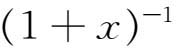
与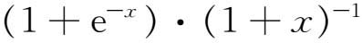
就有相同的渐近表示。庞加莱把他的渐近级数理论应用于微分方程，在他的天体力学著作《天体力学的新方法》（Les Méthodes nouvelles de la mécanique céleste）(22)中就有很多这样的应用。在他1886年的文章中所研究的方程类是
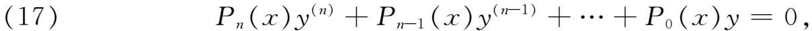
其中
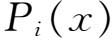
是x的多项式。实际上庞加莱只研究了二阶的情形，但他的方法可以用于（17）。方程（17）的奇点只有
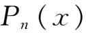
的零点和x＝∞。对于正则奇点（Stelle der Bestimmtheit），存在由富克斯（Lazarus Fuchs）给出的积分的收敛表达式（第29章第5节）。于是考虑一个非正则奇点。用线性变换可以把这个点移到∞去，而使方程保持其形式。如果Pn是p次的，则x＝∞是正则奇点的条件是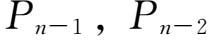
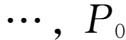
的次数最多分别是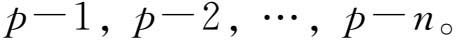
对于非正则奇点，这些次数中的一个或多个必须大些。庞加莱证明，对于形如（17）的微分方程，只要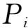
的次数不超过Pn的次数，则存在n个形如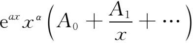
的级数，它们形式地满足微分方程。他还证明，对应于每一个这样的级数，存在一个表示成积分的精确解，以这级数为它的渐近表示。
庞加莱的结果包括在下述的霍恩定理(23)中。霍恩（Jakob Horn，1867—1946）处理方程
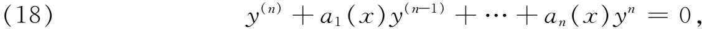
其中系数都是x的有理函数，并且假设对于充分大的正x，可以展成形如
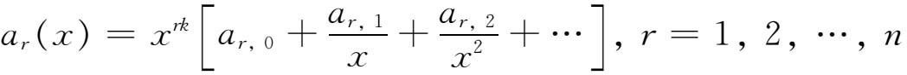
的收敛级数或渐近级数，其中k是正整数或0。如果对于上面的方程（18），特征方程即代数方程
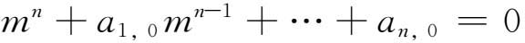
的根
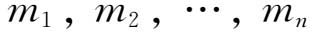
互不相同，则方程（18）有n个线性无关的解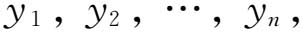
对充分大的正x，它们也可以渐近地展成形式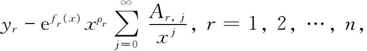
其中
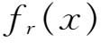
是x的k＋1次多项式，它的x的最高次幂的系数是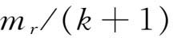
，而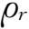
与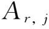
是常数，但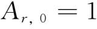
。庞加莱和霍恩的结果已推广到许多其他类型的微分方程，并且推广到特征方程的根不一定互不相同的情形。当（18）中的自变量允许取复值时，渐近级数解的存在、形式和范围，首先由霍恩(24)处理过。伯克霍夫（George David Birkhoff，1884—1944）给出了一个普遍的结果，他是美国早期的大数学家之一(25)。伯克霍夫在这篇文章中不是考虑方程（18），而是考虑更一般的方程组
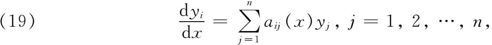
其中当｜x｜＞R时，对于每个
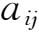
都有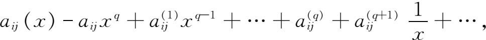
并且对于（19）而言，特征方程
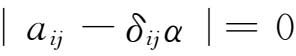
有互不相同的根。他给出了
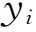
的渐近级数解，它们在复平面上以x＝0为顶点的各扇形中成立。尽管庞加莱和其他人的上述展开式都是由自变量的幂构成的，但是微分方程渐近级数解的进一步研究却回到了刘维尔最早考虑过的含参数的问题（第2节）。伯克霍夫给出了这个问题的普遍结果(26)。他考虑
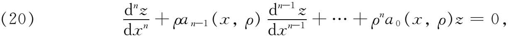
其中｜ρ｜是大的，并且x∈［a，b］。函数
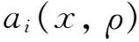
假设对复参量ρ在ρ＝∞处是解析的，并且对实变量x有各阶微商。对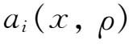
所作的假设蕴含了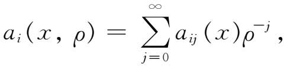
也蕴含了特征方程
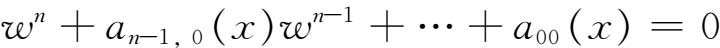
的根
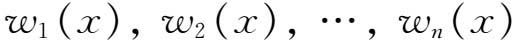
对每一个x是互不相同的。他证明（20）有n个无关解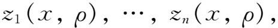
这些解在ρ平面（由ρ的辐角确定）的区域S中关于ρ是解析的，使得对任一整数m和充分大的｜ρ｜都有
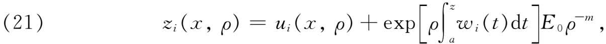
其中
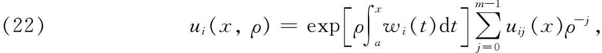
而E0是x，ρ，m的函数，且对于所有［a，b］中的x与S中的ρ有界。这些
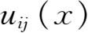
本身是可确定的。由于（22），结果（21）表明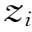
是由1／ρ直到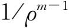
诸项加上一个余项（即右边第二项，它包含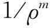
）所得级数给出的。此外，由于m是任意的，人们可以在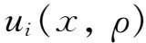
的表达式中随意取1／ρ的任意多少项。因E0有界，余项对1／ρ来说比的阶更高。于是，令m变为无穷所得到的无穷级数，在庞加莱意义下渐近到在伯克霍夫定理中，复数ρ的渐近级数只在复ρ平面的一个扇形区域S内成立。斯托克斯现象就出现了。也就是说，的越过斯托克斯线的解析开拓，并不能由的渐近级数的解析开拓给出。
渐近级数的运用，或微分方程解的WKBJ逼近的运用，提出了另一个问题。假设我们考虑方程
其中x在［a，b］中取值。对于充分大的λ，由于（7），WKBJ逼近在x＞0处给出两个解，在x＜0处也给出两个解。而在使q（x）＝0的x处发生了问题。这样的点称为过渡点、转折点或斯托克斯点。然而，（23）的精确解在这种点处却是有穷的。问题是要连接在转折点各侧的WKBJ解，使它们在微分方程的求解区间［a，b］内表示同一个精确解。为了把问题提得明确些，假设上面的方程中q（x）对于实的x是实的，并且x＝0时q（x）＝0，q′（x）≠0。还假设q（x）对于正的x是负的（或者反过来）。对x＜0，给定两个WKBJ解的一个线性组合，对x＞0，则给定另一个线性组合。问题在于对x＞0成立的哪个解应当与x＜0的哪个解连接起来。连接公式提供了答案。
解决越过q（x）的零点的方案首先由瑞利（S．J．W．Rayleigh）勋爵(27)提出，并由熟悉瑞利工作的甘斯（Richard Gans，1880—1954）(28)作了推广。他们两人都是研究光在变介质中的传播的。
连接公式的第一个系统研究是由杰弗里斯(29)独立于甘斯做出的。杰弗里斯考虑方程
其中x是实的，λ是充分大的实数，X（x）只有一个单零点，譬如说x＝0。他导出了连接（24）在x＞0和x＜0时的渐近级数解的公式，用的是（24）的一个近似方程，即
它是用x的一个线性函数代替（24）中的X（x）。（25）的解是
其中。对充分大的x，这些解的渐近展开式可以用来连接x＝0两边的渐近解。在连接过程中，必须考虑涉及x及λ变域的许多细节，这里不讨论。在大量文章中，连接公式的研究已推广到（24）中的X（x）有多重零点或n个不同的零点，以及更复杂的二阶方程与高阶方程，或复的x与λ等各种情形。
渐近级数的理论，无论是用来计算积分或者微分方程近似解，近年来都有巨大的拓广。特别值得指出的是，数学发展表明，18，19世纪的人，最有名的是欧拉，他们觉察到发散级数的巨大功用，并坚持认为这些级数可以用作它们所表示的函数的分析等价物，即级数的运算对应于函数的运算。他们的路子是正确的。虽然他们不能提炼出本质的严密的概念，但是，基于直观和所得到的结果，他们看到了发散级数和它们所表示的函数是密切地关联着的。